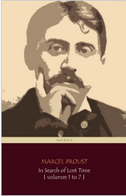

Swann's Way, the first part of A la recherche de temps perdu, Marcel Proust's seven-part cycle, was published in 1913. In it, Proust introduces the themes that run through the entire work. The narrator recalls his childhood, aided by the famous madeleine; and describes M. Swann's passion for Odette. The work is incomparable. Edmund Wilson said "[Proust] has supplied for the first time in literature an equivalent in the full scale for the new theory of modern physics."
